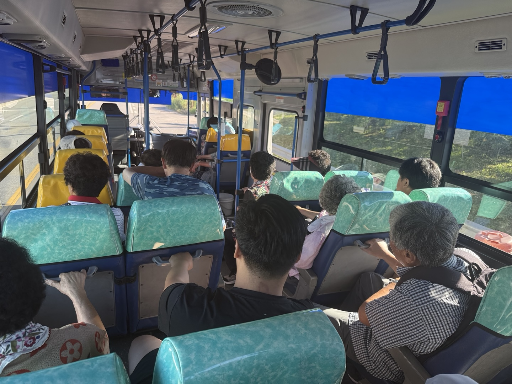
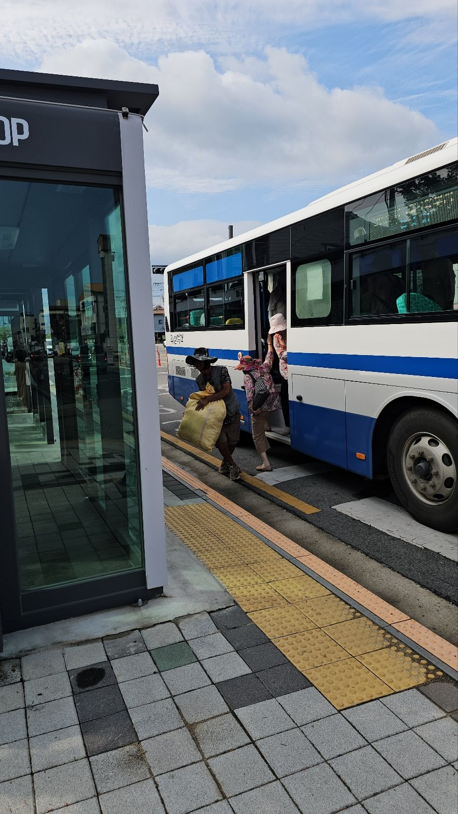
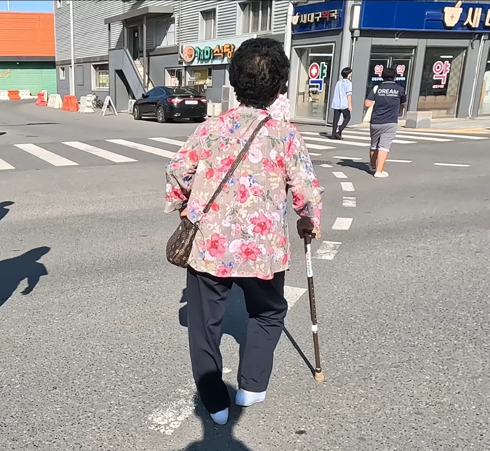
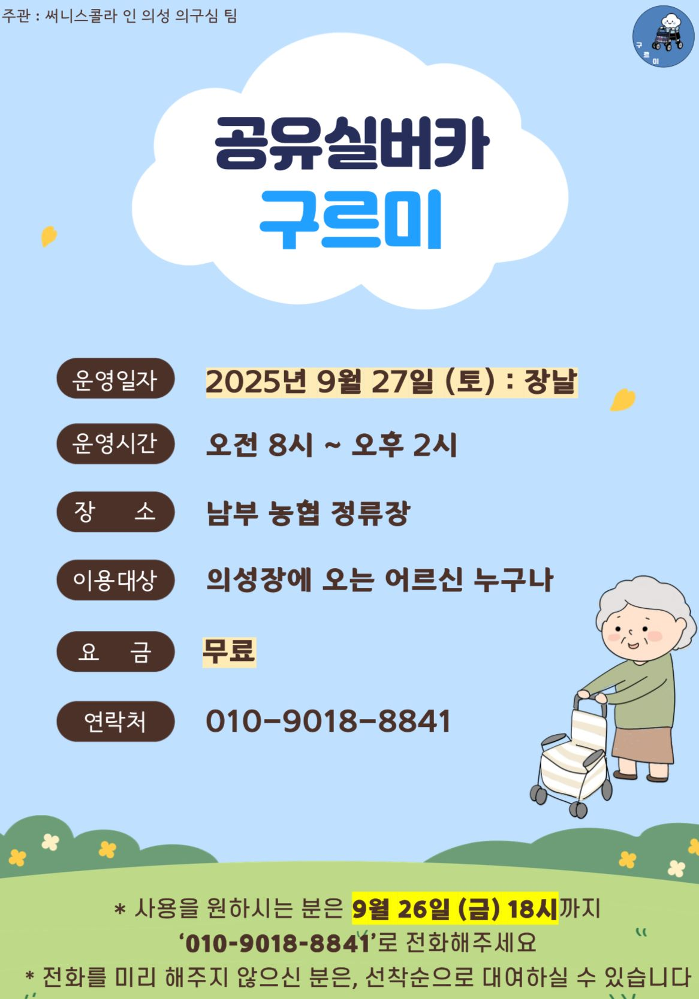

01 의성의 일상. 시장 골목 어디서나 실버카를 끄는 어르신들의 모습을 볼 수 있다.

"의성에서 살구 먹으며 힘내자!"는 말에서 시작된 '의구심(疑仇心)'. '의성(Uiseong)'의 '의(義)'와 '구석(角)'의 '구', '마음(心)'을 합쳐 지역의 구석진 문제를 따뜻한 시선으로 바라보겠다는 뜻.
01 의성의 일상. 시장 골목 어디서나 실버카를 끄는 어르신들의 모습을 볼 수 있다.
우리가 처음 문제의식을 느낀 건 금성면 초전2리 마을 앞 버스 정류장이었다. 그날은 정자 할머니가 읍에서 장을 보고 돌아오는 길이었다. 남부농협 앞 버스 정류장에서 고추 20근이 담긴 보따리를 들고, 지팡이에 의지한 채 혼자 버스에 오르려는 모습을 보고 우리는 짐을 들어드리며 함께 이동하게 되었다.
버스에서 내려 할머니 댁으로 향하던 중, 정류장 옆에 세워둔 할머니의 실버카가 눈에 들어왔다. 처음엔 그저 '왜 실버카를 여기 두고 가셨을까?'라는 의문이 들었다. 그러나 대화를 나누는 과정에서, 할머니는 "가지고 가고 싶어도 버스에 못 실어서 두고 간다"고 설명했다.

02 버스 정류장에 덩그러니 놓인 실버카. 버스에 실을 수 없어 두고 가야 한다.
면 지역에서의 이동은 마을회관이나 이웃집 등 비교적 짧은 거리에 그치지만, 읍내에 나오면 병원, 시장, 미용실 등 훨씬 넓은 동선을 이동해야 한다. 버스를 타기 전까지는 실버카를 사용할 수 있지만, 정작 가장 많은 이동이 이루어지는 읍내에서는 실버카를 사용할 수 없는 상황.
그제서야 주변을 둘러보니, 도시에서는 보기 어려운 장면이 의성에서는 일상이었다. 시장 골목, 마을회관, 미용실, 버스정류장 등 어디서나 실버카를 끄는 어르신들의 모습을 쉽게 볼 수 있었다.
우리가 만난 87명의 어르신 중 절반이 넘는 51명이 실버카를 사용하고 있었다. 이들의 평균 농사 경력은 61.4년에 달했으며, 대부분 허리, 무릎, 관절 질환을 겪고 있었다. 이들에게 실버카는 단순한 보행 보조기구가 아니라 통증을 완화하고 외출을 가능하게 하는 필수적인 이동 수단이었다.

03 실버카. 어르신들에게는 단순한 보행 보조기구가 아닌, 외출을 가능하게 하는 필수 이동 수단이다.
어르신들의 주요 외출 목적은 병원 진료와 장보기. 의성의 생활 인프라는 모두 읍내에 집중되어 있다. 면에서 읍으로의 교통수단은 사실상 버스가 유일하다. 택시는 요금 부담이 크고, 행복택시는 이용 요건과 횟수에 제한이 있다.
장날이 되면 버스는 평소보다 훨씬 붐빈다. 그러나 승객들 사이에서 실버카를 보기는 어려웠다. 대신 면 지역 버스 정류장에 덩그러니 놓여 있는 실버카.

04 장날, 붐비는 버스. 승객들 사이에서 실버카는 보이지 않는다.
"어르신들의 이동 필수품인 실버카는 왜 읍내까지 함께 가지 못하고, 정류장에 두고 가야할까?"


정자 할머니의 병원 외출에 동행했다. 집에서 버스 정류장까지는 실버카를 끌고 이동한다. 버스를 타면서 실버카를 정류장에 두고, 읍내에서는 지팡이 하나에 의지한다. 실버카를 사용할 때는 보행이 안정적이었지만, 지팡이로 바꾼 뒤에는 보폭이 좁아지고 중심이 흔들렸다. 7분 거리에 통증을 호소했다.

06 정자 할머니의 외출 동선. 실버카 사용 구간과 지팡이 의존 구간은 확연히 다르다.
실버카 공백구간(Silvercar Gap) — 실버카를 사용할 수 없어 지팡이에 의지하거나 이동을 포기해야 하는 구간. 장날 평균 75분.

07 실버카 공백구간 타임라인. 장날 평균 75분 동안 어르신들은 실버카 없이 이동해야 한다.
실버카 의존층: 신체적 질환으로 실버카 없이는 외출이 힘든 어르신. 51명의 실버카 사용자 중 46명(90.2%)이 이에 해당한다.

| 비교 항목 | 실버카 | 지팡이 |
|---|---|---|
| 체중 분산 | 4바퀴로 고르게 분산 | 한쪽에 집중 |
| 보행 안정성 | 균형 유지 용이 | 불안정 |
| 짐 수납 | 수납공간 있음 | 양손에 짐 |

09 실버카와 지팡이의 구조적 차이. 실버카는 체중 분산, 안정성, 수납 모든 면에서 우위에 있다.
평소 500m 내외의 이동 거리는 장날이 되면 훨씬 길어지고, 짐 무게는 배로 늘어난다. 실버카는 정류장에 세워둔 채 지팡이만 짚고 읍내를 이동한다.
"힘들어서 여기서 쉬었다 가야해"
"실버카 있으면 물건도 넣을 수 있고 훨씬 편하지 이거(지팡이) 들면 허리도 아프고 힘들어"
의성군 농어촌버스에 저상버스는 없다. 일부 구간은 물리적으로 불가능하다. 평균 8kg의 실버카를 30cm 계단 2–3칸 오르내려야 한다.

10 버스 승하차 관찰 데이터. 실버카를 들고 계단을 오르내리는 것은 어르신에게 물리적으로 불가능하다.
맨 앞좌석을 활용해 실버카를 실을 공간을 만드는 방법을 검토했다.

시중의 초경량 제품을 도입해 버스 탑승 시 부담을 줄이는 방법을 시도했다.

"근본적인 해결책은 실버카를 버스에 싣는 방법이 아니라, 어르신이 원할 때 스스로 이동할 수 있는 조건을 갖추는 것"
이동권은 움직이는 자유가 아니라 사회적 관계망 속에서 자신을 유지하게 만드는 요소다. 의성장은 물건을 사고파는 공간이 아니라 관계를 이어가는 사회적 공간이다.

13 공유실버카 '구르미' 대여소. 남부농협 정류장 앞에 실버카 5대가 줄지어 배치되어 있다.
장날(매월 2일·7일) 남부농협 정류장에서 운영한다. 이름과 전화번호만 적으면 대여할 수 있다. 앱도, QR 코드도 필요 없는 아날로그 방식.



연간 약 1,000만원으로 1,440회의 이동을 지원할 수 있다. 이 사업은 단독이 아닌 협력체계를 통해 운영된다.

"내는 고맙고 그래가, 마을에다 막 자랑쳤다"
노인 이동권은 소외되고 있다. '신체가 불편해진 노인은 이동을 지양한다'는 인식. 그러나 의성에서 다른 것을 보았다 — 장에서 커피 한잔 앞에 두고 담소, 복지관 수업 신청, 매주 시장 방문.
진정한 의미의 노인 이동권은 청년도 군청도 아닌 어르신이 주체가 되어야 한다.

17 의성의 어르신들. 이동은 단순한 물리적 행위가 아니라, 관계와 삶을 이어가는 일이다.
"안녕하세요! 저희는 서울에서 온 대학생들인데요…" — 의성에 오기 전 노인 이동권은 낯선 개념이었다. 기사와 논문의 편견과 다른 현장을 만나며, 대학생인 우리와 어르신들은 따뜻한 삶을 살아가고자 하는 '사람'임을 깨닫게 되었다.

2025.06.26. – 2025.11.15.
경북 의성